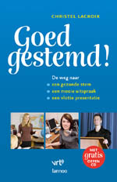

|
Persbericht Lannoo april 2009
Herken je je in een van deze situaties?
Dan is het boek van VRT-logopediste Christel Lacroix, GOED GESTEMD!
zeker iets voor jou!
Logopediste Christel Lacroix traint al meer dan twintig jaar bekende
radio- en televisiestemmen. In dit boek helpt ze je op weg naar een
gezonde en aangenaam klinkende stem. Er is ook een bijhorende cd vol
praktische oefeningen, ingelezen door vertrouwde radio- en
televisie-stemmen van VRT, zoals Wim De Vilder, Kobe Ilsen, Indra
Dewitte, Christophe Lambrecht, Cath Luyten en vele andere. Een
toegankelijk boek met leuke oefeningen voor een mooie uitspraak, een
gezonde stem en een aangename intonatie en presentatie.
'Dat ik een fijn televisieprogramma mag presenteren, heb ik te danken
aan Christel Lacroix. In pure My Fair lady-stijl veranderde ze mijn
plat Antwerps Eliza Doolittle-gemompel in iets verstaanbaars. Net als
professor Higgins deden we honderd keer "het Spaanse graan" en gingen
we op zoek naar de juiste ij. In een mum van tijd leerde ze me praten
én presenteren.'
Erik Van Looy
'Ik dacht dat ik kon lezen. Tot ik tijdens het journalistenexamen voor
een micro een nieuwsbericht moest voorlezen. "Voor verbetering
vatbaar", was het oor-deel van de terecht strenge jury. En zo
geschiedde, met de hulp en het geduld van Christel Lacroix. Geen mens
gelooft me nog als ik dat verhaal van de jury vertel.'
Phara de Aguirre

|